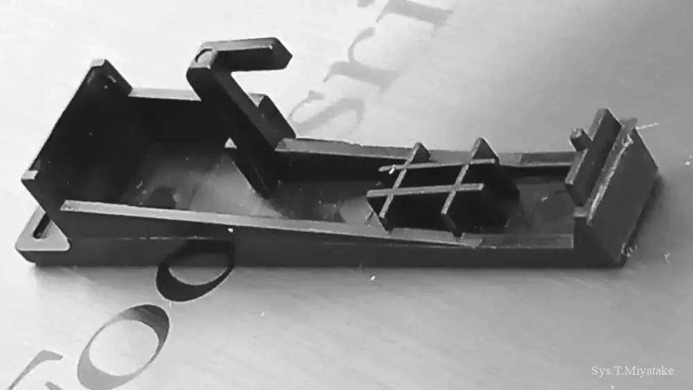
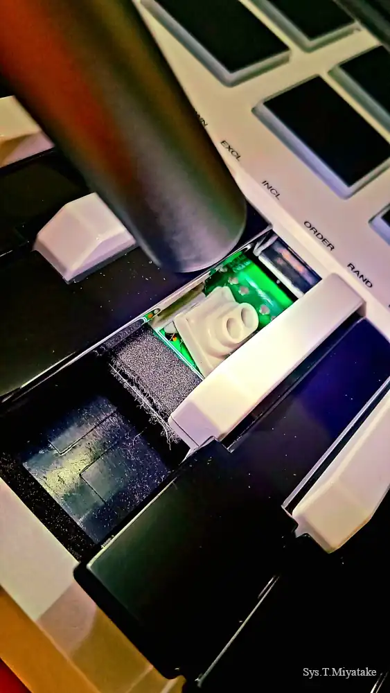
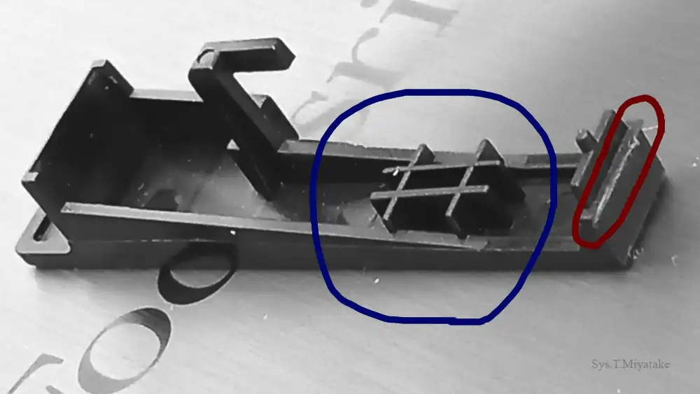

[with audio] #114
【音声配信】【画像】鍵盤が吹っ飛びました…【第24回】
テーマ: グッドバイ・キーボード，教えて！プロジェクト説明くん，音楽と映画とちょっぴりお菓子，etc…｜
時間: 約 65 分｜
料金: 無償（サイト共通）
メニュー
紹介文

いとしのMIDI鍵盤ちゃん…😢
…気を取り直して，今回は3本立て！「第一部：グッドバイ・キーボード」「第二部：教えて！プロジェクト説明くん」「第三部：音楽と映画とちょっぴりお菓子」をお届けします！
どたばたトラブルから始まり，自身の創作理念や哲学に基づく最新独自アート作品解説，影響を受けたと思われる作品群などのテーマで高速且つ濃密にお話いたしました！
それでは，おたのしみください！
ファイル（再生）
中・高音質: "192 - 256kbps mp3";
（参照先: Google Drive ストレージ）
録音者情報: "Sys. T. Miyatake (Date of recording: Nov 11, 2025.)
今回は大きなテーマごとにざっと分けることができたので，全体を３分割して書き出して公開してみます．
■ a.「第一部：グッドバイ・キーボード」"【音声配信】【画像】鍵盤が吹っ飛びました…【第24回】a" Talk Audio（Date of website launch: Nov 11, 2025.）
■ b.「第二部：教えて！プロジェクト説明くん」"【音声配信】【画像】鍵盤が吹っ飛びました…【第24回】b" Talk Audio（Date of website launch: none）
■ c.「第三部：音楽と映画とちょっぴりお菓子」"【音声配信】【画像】鍵盤が吹っ飛びました…【第24回】c" Talk Audio（Date of website launch: none）
ファイル及びデータについての詳細表示
ファイルに関する説明とお願い:
Google LLC https://www.google.com/ のクラウドストレージサービス，Google Drive に保存されているファイルを参照しています．
サイトにお越しの皆さまに鑑賞いただくことを目的として，誰でも再生可能な状態に設定してあります．
当サイト利用者さまがオンラインサーバ上でファイルを再生してお楽しみいただく以外の，たとえばローカルへの保存などの行為はお控えくださいますよう，お願い申し上げます．
ドライブにアップロードする理由:
ファイルサイズが大きいため．
ノート（画像）
キーボードちゃんとのお別れ解剖の儀
■ 破損箇所 1枚目（盤）
緑の基板とホワイトグレーのゴムが見えます（黒鍵に散った白粉がまるでお星様のように輝いていますね）．

■ 破損箇所 2枚目（盤）
赤矢印が接点の位置を指し示しています．

■ 破損箇所 3枚目（鍵）
赤丸の部分が割れてしまっています．青丸の井桁の部分で接点付ゴムを押し込んでいるようです（それは非常に素晴らしいですね）．

登場した独自作品たち
※準備中
リスナーのみなさんへ
この番組では，フィードバックをお待ちしております！
貴重なご意見・ご感想・ご希望などをお聴かせくださると，ありがたいのです！ご協力いただける方は是非 筆者宛にご連絡 お願いいたします...！
以上になります．今回もご清聴ありがとうございました！
[ Sys. T. Miyatake, (Nov 11, 2025. Last modified: none;) ]